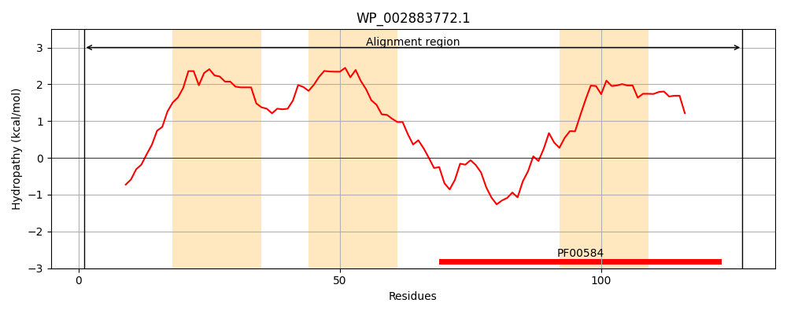
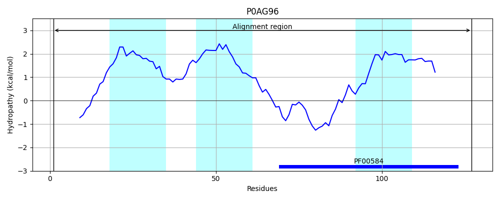
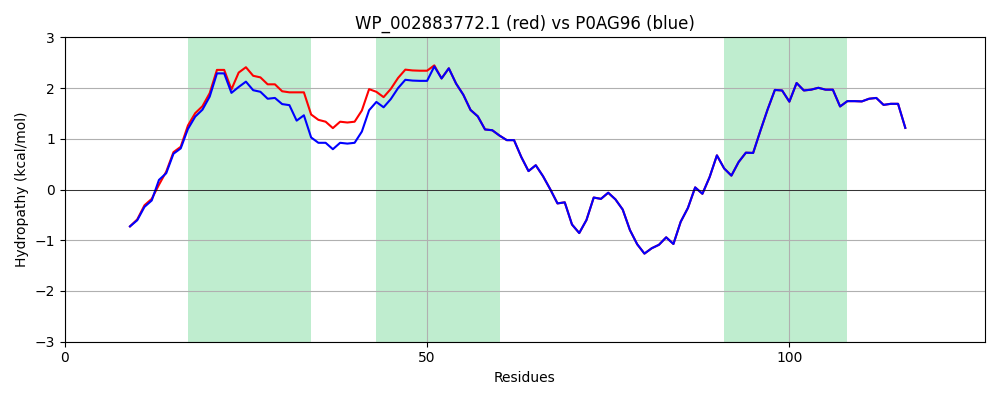

Hit Accession: P0AG96
Hit TCID: 3.A.5.1.1
Hit Description: gnl|BL_ORD_ID|8854 gnl|TC-DB|P0AG96|3.A.5.1.1 Preprotein translocase subunit secE - Escherichia coli.
Mach Len: 127
e:0.000000
Query TMS Count : 3
Hit TMS Count: 3
TMS-Overlap Score: 2.700000
Predicted Substrates:CHEBI:8526;protein polypeptide chain
BLAST Alignment:
Score: 587 , Bit scores: 230 bits, E-value: 6.0e-80, Alignment length: 127, Percentage identity: 94
Query: 1 MSANTEAQGSGRGLEAMKWIIVAVLLIVAIVGNFLYRDIMLAVRALAVVILIAAAGGVALLTTKGKATVAFAREARTEVRKVIWPTRQETLHTTLIVAAVTAVMSLILWGLDGILVRLVSFITGLRF 127
MSANTEAQGSGRGLEAMKW++V LL+VAIVGN+LYRDIML +RALAVVILIAAAGGVALLTTKGKATVAFAREARTEVRKVIWPTRQETLHTTLIVAAVTAVMSLILWGLDGILVRLVSFITGLRF
Sbjct: 1 MSANTEAQGSGRGLEAMKWVVVVALLLVAIVGNYLYRDIMLPLRALAVVILIAAAGGVALLTTKGKATVAFAREARTEVRKVIWPTRQETLHTTLIVAAVTAVMSLILWGLDGILVRLVSFITGLRF 127 | Protein Hydropathy Plots: |
|---|
|  |  |
Pairwise Alignment-Hydropathy Plot:
|
|---|
|  |